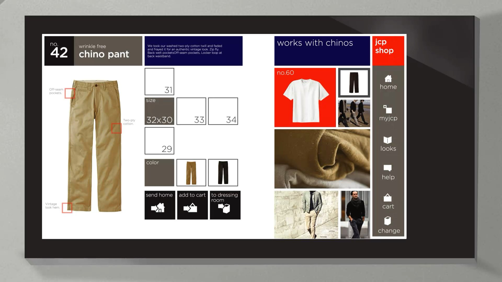
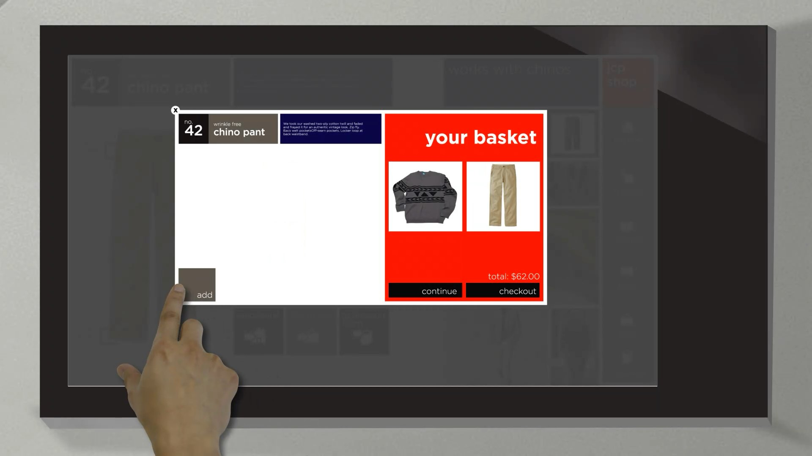
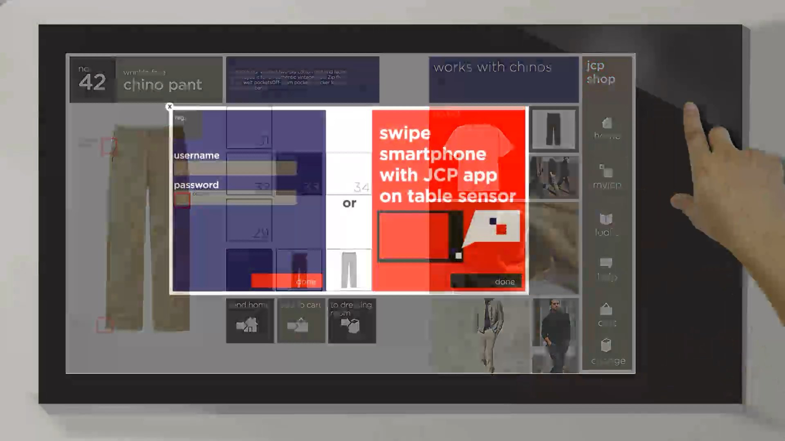
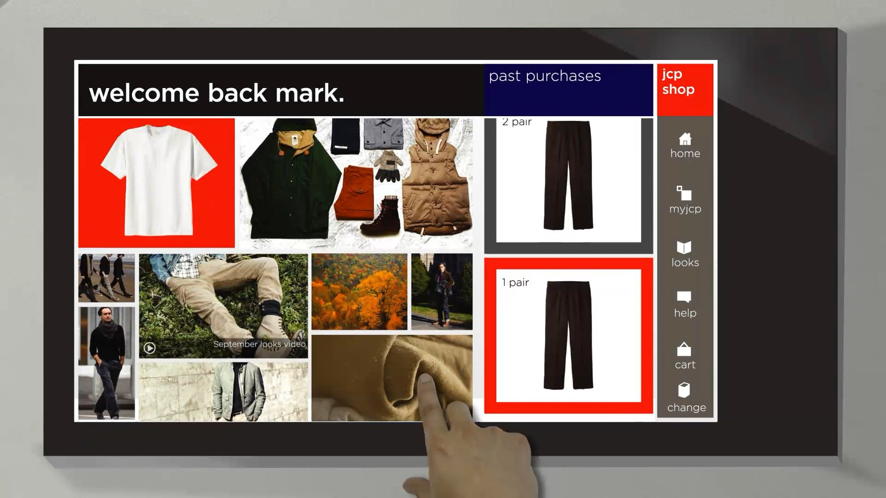
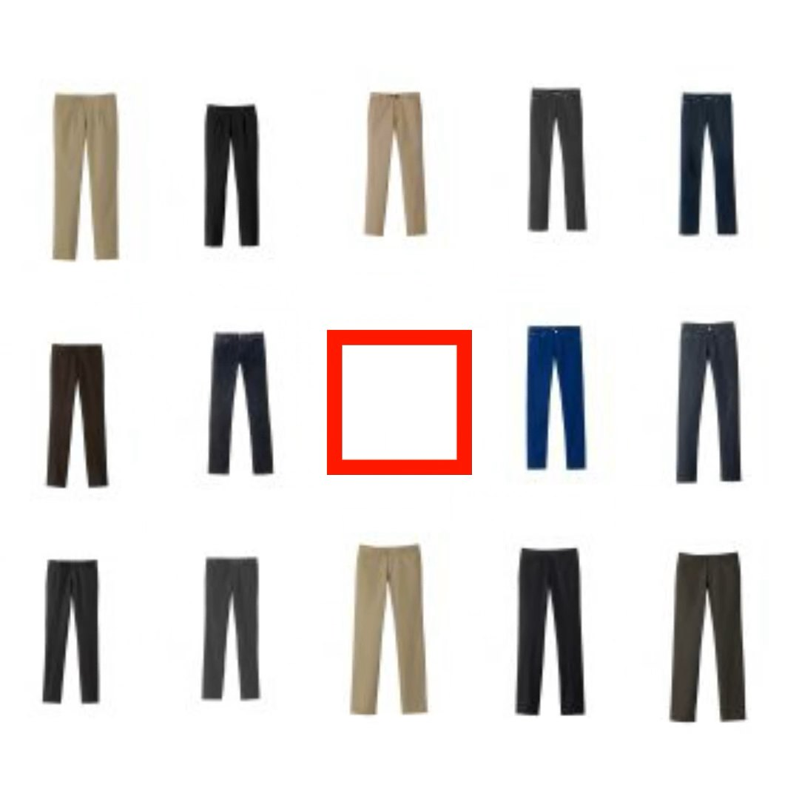

jcp shop
A touchscreen in-store shopping concept for JCPenney, storyboarded and animated as a walkthrough with Moving Brands in 2011.

The problem
Moving Brands' UI storyboard (29 November 2011) called for a walkthrough of a large touchscreen in a JCPenney store, using flat 2D tiles that slide and fade on, to show how a shopper would move from a product tag to a basket.
The approach
The walkthrough starts when a shopper swipes a product tag. A "chino pant" page tiles in with size and colour pickers, a "works with chinos" column of related items and a video tile. The shopper changes size, adds to the basket in a red pop-up, then signs in — by username or by placing a phone with the JCP app on a table sensor — and lands on a personalised "welcome back" view with past purchases and recommendations.
A square backwall loop extended the same red-square motif to the wider space, framing fabric close-ups and a product grid before resolving on the jcp shop mark.




Leadership
Directed agency:collective's UI design and animation for the walkthrough, working for Moving Brands.